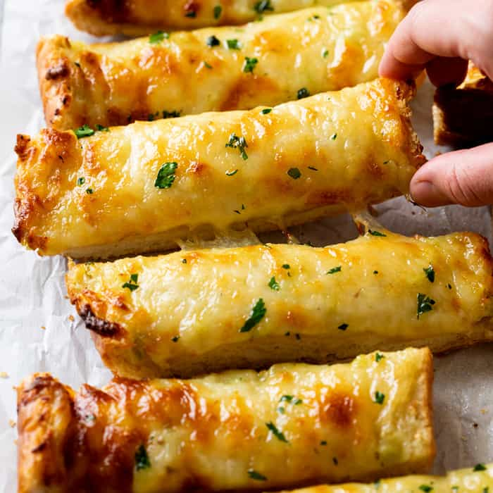

Cheesy Garlic Bread

Description
Imagine a symphony of aromas wafting through the air—warm, toasty bread infused with the tantalizing scent of garlic, adorned with a blanket of gooey, melted cheese. This is the magic of Cheesy Garlic Bread, the ideal companion to your Caesar Salad, creating a culinary duo that's bound to elevate your dining experience to new heights.
Ingredients
- 8 tablespoons (1 stick) unsalted butter, preferably European or Kerrygold
- 1 (8-ounce) loaf unsliced Italian bread
- 2 medium scallions
- 5 cloves garlic
- 2 tablespoons mayonnaise
- 1/2 teapoon garlic powder
- 1/2 teaspoon freshly ground black pepper
- 1/2 teaspoon granulated sugar
- 1/4 teaspoon kosher salt
- 3 ounces low-moisture shredded mozzarella cheese
- 3 ounces Parmesan cheese
Instructions
- Place 1 stick unsalted butter in a small bowl and let sit at room temperature until softened.
- Arrange a rack in the middle of the oven and heat the oven to 425ºF. Line a baking sheet with parchment paper or aluminum foil
- Cut 1 loaf Italian bread in half horizontally with a serrated knife. Halve each piece crosswise for a total of 4 pieces. Place the pieces cut-side up on the baking sheet.
- Thinly slice 2 medium scallions. Reserve 1 tablespoon of the dark green parts for garnish, then add the remaining to the bowl of butter. Mince 5 garlic cloves and add to the bowl of butter.
- Add 2 tablespoons mayonnaise, 1/2 teaspoon garlic powder, 1/2 teaspoon black pepper, 1/2 teaspoon granulated sugar, and 1/4 teaspoon kosher salt to the butter. Smash and stir together until combined into a spreadable paste. Spread the garlic butter evenly onto the cut side of the bread.
- Grate 3 ounces low-moisture mozzarella cheese on the large holes of a box grater (about 1 cup). Grate 3 ounces Parmesan cheese on the small holes of a box grater (about 1 cup). Place both cheeses in a medium bowl and toss to combine. Sprinkle the cheeses evenly over the garlic bread.
- Bake until the cheese is melted and browned in spots, about 15 minutes. Garnish with the reserved scallions.